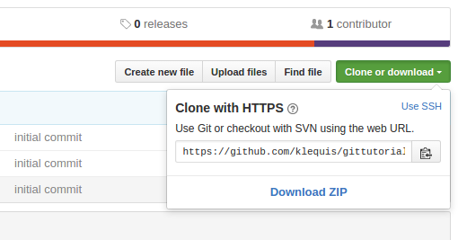

Understanding Git
If you are new to Git or are comming from a different version control system, Git can seem very complicated. I was in the latter category and it took a good amout of time to comfortably think in a new way. If you are a new developer, git may seem especially difficult, but I assure you it is worth learning and will seem simple once you use it for a while.
This tutorial will dive into the details and provide an explanation of what you learned in parts one, two and three. As you start using Git, refer back to this part of the tutorial often.
Definitions
Like many specialized subjects, Git has its own vocabulary and understanding Git well enough to make use of it requires that you learn its vocabulary. Here are some definitions to help with the next steps.
| Working Directory | 'Working directory' is used to refer to files in the project's folder that are currently in a state other than committed. It contains all the files from one version of the project. In our example, the working directory is ~/workspace/gittutorial. It is the project's root directory. |
| Staging Area | The 'staging area' is a file which tracks files that have been added to the staging area with $ git add. |
| Untracked (file) | An untracked file is a file in the working directory that has not been added to Git. |
| Tracked (file) | A tracked file is a file that has been added to the Git repository with $ git add. |
| Modified (file) | A modified file is a tracked file that has been changed since it was last committed. |
| Staged (file) | A staged file is an untracked or modified file that has but added to the staging area with $ git add. It is in the 'staging area' but has not been 'committed' yet. |
| Committed (file) | A staged file that has moved to a committed state by using $ git commit. |
| Repository ("repo") | A repository can be thought of as a Git database. It is a complete copy of your project with all history. |
| Local Repository | The 'local repository' is on your local machine in a /.git directory. In our example the repository is ~/workspace/gittutorial/.git. The '.' before 'git' in .git means it is a hidden directory. To see it using Terminal, use $ ls -la where -a means 'show hidden files'. |
| Remote Repository | The remote repsitory is a repository on a remote server. In our example, the remote repository is the one we created on GitHub. GitHub is not the only place where a remote repository can reside. |
| Remote | A remote is a name that holds the URL to the remote repository. You can think of it as a variable that holds a string where the string is the URL to the remote repository. |
| Branch | Git is like a tree. You can add branches to your tree. Each branch is a complete version of your project. The default branch is called 'master'. Take a look at your GitHub home page and find the dropdown that says 'Master'. Currently, your repository only has one branch, i.e., Master |
Git Life-cycle
There are four 'areas' that we will be working with. The first three are on your local machine. The fouth is GitHub. An 'area' is either a file or a folder. The 'staging area' is a file. The 'working directory' is a folder.
While the areas are the same regardless of which command line interface (CLI) you are using, the colors may vary. The below colors are from Ubuntu Gnome (a flavor of Linux). You will see these colors when using $ git status and $ git add
| Wroking Directory (~/workspace/git-git-hub-tutorial) |
- Untracked files are red - Tracked but modified files are red |
| Staging Area (is really a file) |
- Staged files are green |
| Local Repository (~/workspace/git-github-tutorial/.git) |
- Commited files are tracked & un-modified. They are not shown in $ git status. |
| GitHub Repository (https://github.com/demoacct-klequis/git-github-tutorial.git) |
- Commited files are tracked & un-modified. They are not shown in $ git status. |
Life-cycle
A file you want to commit will be either 'untracked' or 'modified'. It is moved to the 'staged' state with $ git add and to the 'committed' state with $ git commit.
| Untracked | Staged | Committed |
| Modified | Staged | Committed |
- In the output of
$ git addmodified and untracked files are in red text. - When you add a new file to the working directory it is an 'untracked' file.
- When you modify a previously committed file it becomes 'modified'.
- When you include a modified or untracked file in the
$ git addcommand it becomes 'staged'. - When the
$ git commitcommand is executed, all staged files become committed. Commited files are not show in the output of$ git status.
Examples
Untracked files are in red text.
Staged files are in green text. Before using $git add, about.html was 'untracked' and is now listed as 'new file:', and index.html was 'modified' and is now listed as 'modified:'. The life-cycle diagram above illustrates these changes.
I wouldn't say that commited files have a color as once they are commited they do not show in $ git status. After using $ git commit they are listed in white text, but this is just the command line editors default text color and not indicitive of a state.
Remotes Explained
You created a remote in part 3 of this tutorial when you used the command ...
$ git remote add origin https://github.com/demoacct-klequis/gittutorial.git
In this case you created a remote named 'origin'. There is nothing special about 'origin' except that it is the default name used by Git, as you will see when we use the$ git cloan command below.
As defined in the Git documentation, "A repository which is used to track the same project but resides somewhere else." Like a bookmark you create in you web browser, it has a name and a URL. Let's do a brief exercise to learn about remotes.
Your 'gittutorial' project is safely stored on GitHub and now we are going to do something uncomfortable but completely safe. In your file manager, delete the entire /gittutorial directory. If you want to do one last $ git status and if needed $ git push origin master just to be sure all your changes are up on GitHub, do that first. Then delete the entire directory.
We are going to use the $ git cloan, which we will look at in more detail later. Execute the following command.
Go to you project on GitHub, click on the green button and copy the url as shown below.
Now use the 'cloan' command to download your project from GitHub. (My url is how below. Be sure to use yours.)
$ git cloan https://github.com/klequis/gittutorial.git
Take a quick look at your project in a file manager. Everything is back!
$ git cloan has created a remote for you named 'origin' and it points to the url you used with the $ git cloan command. To see this, use the below command. (The -v stands for 'verbose'.) As you can see in the output of the command you have a remote named 'origin' and it contains two URLs, which happen to be the same, one to 'fetch' from GitHub and another to 'push' to GitHub.
$ git remote -v

So to sum it up, a remote is like a bookmark that has a name and two URLs, one to get files/changes from GitHub and another to push files/changes to GitHub.
Summary
So far we have covered each term in the definitions list with the exception of 'branch' which will be discussed in a future addition of this tutorial. In the next part we will go over the most commonly used Git commands in detail.
Keep going!